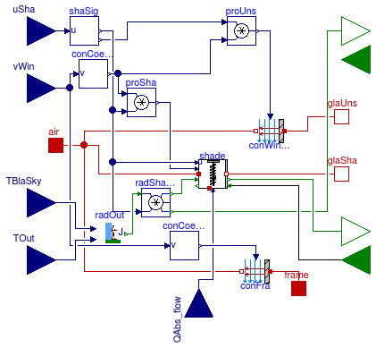

Package with models for windows
This package contains models for heat transfer in windows.
Extends from Modelica.Icons.VariantsPackage (Icon for package containing variants).
| Name | Description |
|---|---|
| Model for heat convection and radiation at the exterior surface of a window that may have a shading device | |
| Model for exterior shade due to overhang and/or side fin | |
| Model for heat convection at the interior surface of a window that may have a shading device | |
| For a window with an overhang, outputs the fraction of the window area exposed to the sun | |
| SideFins | For a window with side fins, outputs the fraction of the window area exposed to the sun |
| Model for a window | |
| Functions used in window radiation model | |
| Collection of models that illustrate model use and test models | |
| Package with base classes for Buildings.HeatTransfer.Windows |
 Buildings.HeatTransfer.Windows.ExteriorHeatTransfer
Buildings.HeatTransfer.Windows.ExteriorHeatTransfer
Model for heat convection and radiation at the exterior surface of a window that may have a shading device

Model for the convective heat transfer between a window shade, a window surface and the room air. This model is applicable for the outside-facing surface of a window system and can be used with the model Buildings.HeatTransfer.Windows.Window.
This model adds the convective heat transfer coefficient to its base model.
Extends from BaseClasses.PartialWindowBoundaryCondition (Partial model for heat convection or radiation between a possibly shaded window that can be outside or inside the room).
| Type | Name | Default | Description |
|---|---|---|---|
| Area | A | Heat transfer area of frame and window [m2] | |
| Real | fFra | Fraction of window frame divided by total window area | |
| Boolean | linearizeRadiation | Set to true to linearize emissive power | |
| Real | vieFacSky | View factor from receiving surface to sky [1] | |
| Shading | |||
| Boolean | haveExteriorShade | Set to true if window has exterior shade (at surface a) | |
| Boolean | haveInteriorShade | Set to true if window has interior shade (at surface b) | |
| Boolean | thisSideHasShade | haveExteriorShade | Set to true if this side of the model has a shade |
| Emissivity | absIRSha_air | Infrared absorptivity of shade surface that faces air [1] | |
| Emissivity | absIRSha_glass | Infrared absorptivity of shade surface that faces glass [1] | |
| TransmissionCoefficient | tauIRSha_air | Infrared transmissivity of shade for radiation coming from the exterior or the room [1] | |
| TransmissionCoefficient | tauIRSha_glass | Infrared transmissivity of shade for radiation coming from the glass [1] | |
| Type | Name | Description |
|---|---|---|
| input RealInput | uSha | Input connector, used to scale the surface area to take into account an operable shading device, 0: unshaded; 1: fully shaded |
| HeatPort_a | air | Port that connects to the air (room or outside) |
| HeatPort_b | glaUns | Heat port that connects to unshaded part of glass |
| HeatPort_b | glaSha | Heat port that connects to shaded part of glass |
| HeatPort_a | frame | Heat port at window frame |
| input RealInput | vWin | Wind speed [m/s] |
| input RealInput | TBlaSky | Black body sky temperature [K] |
| input RealInput | TOut | Outside temperature [K] |
| output RadiosityOutflow | JOutUns | Outgoing radiosity that connects to unshaded part of glass [W] |
| input RadiosityInflow | JInUns | Incoming radiosity that connects to unshaded part of glass [W] |
| output RadiosityOutflow | JOutSha | Outgoing radiosity that connects to shaded part of glass [W] |
| input RadiosityInflow | JInSha | Incoming radiosity that connects to shaded part of glass [W] |
| input RealInput | QSolAbs_flow | Solar radiation absorbed by shade [W] |
 Buildings.HeatTransfer.Windows.FixedShade
Buildings.HeatTransfer.Windows.FixedShade
Model for exterior shade due to overhang and/or side fin

This model outputs the fraction of the window area that is sun exposed
for a window that may have an overhang and sidefins.
Depending on the record with construction data conPar,
an overhang, side fins or no external shade is modeled.
The model allows having an overhang and side fins at the same time.
In such a case, the overhang width should be
measured from the window edge to the sidefin,
because the overhang width beyond the sidefin will
cast a shadow on the side fin and not on the window.
Similarly, the side fin height should be measured
from the upper window edge to the overhang,
because the side fin height above the
overhang will not cast a shadow on the window.
The parameters for the dimensions of the overhang and side fins are as
described in the models
Buildings.HeatTransfer.Windows.Overhang
and
Buildings.HeatTransfer.Windows.SideFins.
For overhangs, the model assumes that
For side fins, the model assumes that
The detailed calculation method is explained in Buildings.HeatTransfer.Windows.BaseClasses.SideFins and in Buildings.HeatTransfer.Windows.BaseClasses.Overhang.
Extends from HeatTransfer.Windows.BaseClasses.ShadeInterface_weatherBus (Base class for models of window shade and overhangs).
| Type | Name | Default | Description |
|---|---|---|---|
| ParameterConstructionWithWindow | conPar | Construction parameters | |
| Angle | lat | Latitude [rad] | |
| Angle | azi | Surface azimuth; azi= -90 degree East; azi= 0 South [rad] |
| Type | Name | Description |
|---|---|---|
| Bus | weaBus | Weather data bus |
| input RealInput | incAng | Solar incidence angle [rad] |
| input RealInput | HDirTilUns | Direct solar irradiation on tilted, unshaded surface [W/m2] |
| output RealOutput | HDirTil | Direct solar irradiation on tilted, shaded surface [W/m2] |
| output RealOutput | fraSun | Fraction of the area that is unshaded [1] |
 Buildings.HeatTransfer.Windows.InteriorHeatTransferConvective
Buildings.HeatTransfer.Windows.InteriorHeatTransferConvective
Model for heat convection at the interior surface of a window that may have a shading device

Model for the convective heat transfer between a window shade, a window surface and the room air. This model is applicable for the room-facing surface of a window system and can be used with the model Buildings.HeatTransfer.Windows.Window.
This model adds the convective heat transfer coefficient to its base model.
Extends from BaseClasses.PartialWindowBoundaryCondition (Partial model for heat convection or radiation between a possibly shaded window that can be outside or inside the room).
| Type | Name | Default | Description |
|---|---|---|---|
| Area | A | Heat transfer area of frame and window [m2] | |
| Real | fFra | Fraction of window frame divided by total window area | |
| CoefficientOfHeatTransfer | hFixed | 4 | Constant convection coefficient [W/(m2.K)] |
| InteriorConvection | conMod | Buildings.HeatTransfer.Types... | Convective heat transfer model |
| Angle | til | Surface tilt [rad] | |
| Shading | |||
| Boolean | haveExteriorShade | Set to true if window has exterior shade (at surface a) | |
| Boolean | haveInteriorShade | Set to true if window has interior shade (at surface b) | |
| Boolean | thisSideHasShade | haveInteriorShade | Set to true if this side of the model has a shade |
| Type | Name | Description |
|---|---|---|
| input RealInput | uSha | Input connector, used to scale the surface area to take into account an operable shading device, 0: unshaded; 1: fully shaded |
| HeatPort_a | air | Port that connects to the air (room or outside) |
| HeatPort_b | glaUns | Heat port that connects to unshaded part of glass |
| HeatPort_b | glaSha | Heat port that connects to shaded part of glass |
| HeatPort_a | frame | Heat port at window frame |
| input RealInput | QRadAbs_flow | Total net radiation that is absorbed by the shade (positive if absorbed) [W] |
| output RealOutput | TSha | Shade temperature [K] |
 Buildings.HeatTransfer.Windows.Overhang
Buildings.HeatTransfer.Windows.Overhang
For a window with an overhang, outputs the fraction of the window area exposed to the sun
For a window with an overhang, this model outputs the fraction of the area that is exposed to the sun. The models can also be used for doors with an overhang.
The overhang can be asymmetrical (i.e. wR ≠ wL is allowed)
about the vertical centerline of the window. However, the
overhang must completely cover the window,
i.e., wL ≥ 0 and wR ≥ 0.
wL and wR must be measured from the respective corner
of the window.
The figure below shows the parameters.
The surface azimuth azi is as defined in
Buildings.Types.Azimuth.
The model assumes that
The implementation is explained in Buildings.HeatTransfer.Windows.BaseClasses.Overhang.
Extends from Buildings.Rooms.BaseClasses.Overhang (Record for window overhang), Buildings.HeatTransfer.Windows.BaseClasses.PartialShade_weatherBus (Partial model to implement overhang and side fins with weather bus connector).
| Type | Name | Default | Description |
|---|---|---|---|
| Angle | lat | Latitude [rad] | |
| Angle | azi | Surface azimuth; azi= -90 degree East; azi= 0 South [rad] | |
| Overhang | |||
| Length | wL | Overhang width left to the window, measured from the window corner [m] | |
| Length | wR | Overhang width right to the window, measured from the window corner [m] | |
| Length | dep | Overhang depth (measured perpendicular to the wall plane) [m] | |
| Length | gap | Distance between window upper edge and overhang lower edge [m] | |
| Window | |||
| Length | hWin | Window height [m] | |
| Length | wWin | Window width [m] | |
| Type | Name | Description |
|---|---|---|
| Bus | weaBus | Weather data bus |
| input RealInput | incAng | Solar incidence angle [rad] |
| input RealInput | HDirTilUns | Direct solar irradiation on tilted, unshaded surface [W/m2] |
| output RealOutput | HDirTil | Direct solar irradiation on tilted, shaded surface [W/m2] |
| output RealOutput | fraSun | Fraction of the area that is unshaded [1] |
For a window with side fins, outputs the fraction of the window area exposed to the sun

For a window with side fins, this model outputs the fraction of
the area that is exposed to the sun.
The model calculates the fraction of the window area that is exposed to the sun.
The side fins are symmetrically placed above the vertical window centerline,
and its height must be equal or greater than the window height.
This models can also be used for doors with side fins.
The figure below shows the parameters. The parameter h is measured
from the top of the window to the top of the side fins.
Side fins are assumed to extend at least to the lower edge of the window.
(Any portion of the side fin below the window edge does not cast
as shadow on the window anyway.)
The parameter h is measured
from the top of the window to the top of the side fins.
The side fin must extend at least to the bottom of the window.
The detailed calculation method is explained in Buildings.HeatTransfer.Windows.BaseClasses.SideFins.
Extends from Buildings.Rooms.BaseClasses.SideFins (Record for window side fins), Buildings.HeatTransfer.Windows.BaseClasses.PartialShade_weatherBus (Partial model to implement overhang and side fins with weather bus connector).
| Type | Name | Default | Description |
|---|---|---|---|
| Side fin | |||
| Length | h | Height of side fin that extends above window, measured from top of window [m] | |
| Length | dep | Side fin depth (measured perpendicular to the wall plane) [m] | |
| Length | gap | Distance between side fin and window edge [m] | |
| Window | |||
| Length | hWin | Window height [m] | |
| Length | wWin | Window width [m] | |
| Type | Name | Description |
|---|---|---|
| Bus | weaBus | Weather data bus |
| input RealInput | incAng | Solar incidence angle [rad] |
| input RealInput | HDirTilUns | Direct solar irradiation on tilted, unshaded surface [W/m2] |
| output RealOutput | HDirTil | Direct solar irradiation on tilted, shaded surface [W/m2] |
| output RealOutput | fraSun | Fraction of the area that is unshaded [1] |
Model for a window

This is a model for a window system. The equations are similar to the equations used in the Window 5 model and described in TARCOG 2006. The model computes the heat balance from the exterior surface to the room-facing surface for a window system. The window system can have an exterior or an interior shade, but not both, or it can have no shade. The convective heat transfer between the window system and the outside air or the room is not computed by this model. They can be computed using the models Buildings.HeatTransfer.Windows.ExteriorHeatTransfer and Buildings.HeatTransfer.Windows.InteriorHeatTransfer.
To calculate the angular transmittance, reflectance and absorptance of a glazing system, Window 5 model first calculates the value for each wave length, then calculate the weighted value over entire wave lengths. Current window model in Buildings library only uses the weighted value of each glass. As a result, there are some differences in prediciton between the current Modelica window model and WINDOW 5. The difference is small for single layer window or multi-layer window with the same glasses. But it can be large for multi-layer window with different glasses.
This model takes as the parameter glaSys a data record
from the package
Buildings.HeatTransfer.Data.GlazingSystems.
This data record specifies the properties of the glasses,
the gas fills, the frame and of
the shades, if any shade is present.
Whether a shade is present or not is determined by the parameters
glaSys.haveExteriorShade and
glaSys.haveInteriorShade.
The parameter linearize can be used
to linearize the model equations.
If a shade is present, then the input port u is used
to determine the
shade position. Set u=0 to have the window in the
unshaded mode,
and set u=1 to have the window shade completely deployed.
Any intermediate value is possible.
If no shade is present, then this port will be removed.
For the heat ports, the suffix _a is used for the exterior, outside-facing side
of the window, and the suffix _b is used for the interior, room-facing surface
of the window.
Each side has heat ports that connect to the glass, to the frame, and, optionally, to the
shade. If no shade is present, then the heat port to the shade will be removed.
The model has three main submodels that implement the relevant heat balances:
frame computes heat conduction
through the frame.
glaUns computes the heat balance of the part of the
window that is unshaded. For example, if u=0.2, then this model accounts for
the 80% of the window that is not behind the shade or blind.
glaSha computes the heat balance of the part of the
window that is shaded. For example, if u=0.2, then this model accounts for
the 20% of the window that is behind the shade or blind.
If the parameter glaSys specifies that the window has no exterior
and no interior shade, then the model glaSha will be removed.
The models glaUns and glaSha
compute the solar radiation that is absorbed by each
glass pane and the solar radiation that is transitted
through the window as a function of the solar incidence angle.
They then compute a heat balance that takes into account heat conduction through the glass,
heat convection through the gas layer,
and infrared radiation from the exterior and the room through the glass and gas layers.
The infrared radiative heat exchange is computed using a radiosity balance.
Heat conduction through the frame is computed using a heat flow path that is parallel to the
glazing system, i.e., there is no heat exchange between the frame
and the glazing layer.
The window model has been validated by using measurement data at LBNL's Test Cell 71T and by using a comparative model validation with the WINDOW 6 program. These validations are described in Nouidui et al. (2012). The window model has also been validated as part of the BESTEST validations that are implemented in Buildings.Rooms.Examples.BESTEST.
TARCOG 2006: Carli, Inc., TARCOG: Mathematical models for calculation of thermal performance of glazing systems with or without shading devices, Technical Report, Oct. 17, 2006.
Thierry Stephane Nouidui, Michael Wetter, and Wangda Zuo. Validation of the window model of the Modelica Buildings library. Proc. of the 5th SimBuild Conference, Madison, WI, USA, August 2012.
| Type | Name | Default | Description |
|---|---|---|---|
| Generic | glaSys | Glazing system | |
| Area | A | Heat transfer area [m2] | |
| Real | fFra | 0.1 | Fraction of frame |
| Boolean | linearize | false | Set to true to linearize emissive power |
| Angle | til | Surface tilt [rad] | |
| Advanced | |||
| Boolean | homotopyInitialization | true | = true, use homotopy method |
| Type | Name | Description |
|---|---|---|
| output RadiosityOutflow | JOutUns_a | Outgoing radiosity that connects to unshaded part of glass at exterior side [W] |
| input RadiosityInflow | JInUns_a | Incoming radiosity that connects to unshaded part of glass at exterior side [W] |
| output RadiosityOutflow | JOutSha_a | Outgoing radiosity that connects to shaded part of glass at exterior side [W] |
| input RadiosityInflow | JInSha_a | Incoming radiosity that connects to shaded part of glass at exterior side [W] |
| output RadiosityOutflow | JOutUns_b | Outgoing radiosity that connects to unshaded part of glass at room-side [W] |
| input RadiosityInflow | JInUns_b | Incoming radiosity that connects to unshaded part of glass at room-side [W] |
| output RadiosityOutflow | JOutSha_b | Outgoing radiosity that connects to shaded part of glass at room-side [W] |
| input RadiosityInflow | JInSha_b | Incoming radiosity that connects to shaded part of glass at room-side [W] |
| HeatPort_a | glaUns_a | Heat port at unshaded glass of exterior-facing surface |
| HeatPort_b | glaUns_b | Heat port at unshaded glass of room-facing surface |
| HeatPort_a | glaSha_a | Heat port at shaded glass of exterior-facing surface |
| HeatPort_b | glaSha_b | Heat port at shaded glass of room-facing surface |
| HeatPort_a | fra_a | Heat port at frame of exterior-facing surface |
| HeatPort_b | fra_b | Heat port at frame of room-facing surface |
| input RealInput | uSha | Control signal for the shading device. 0: unshaded; 1: fully shaded (removed if no shade is present) |
| input RealInput | QAbsUns_flow[size(glaSys.glass, 1)] | Solar radiation absorbed by unshaded part of glass [W] |
| input RealInput | QAbsSha_flow[size(glaSys.glass, 1)] | Solar radiation absorbed by shaded part of glass [W] |